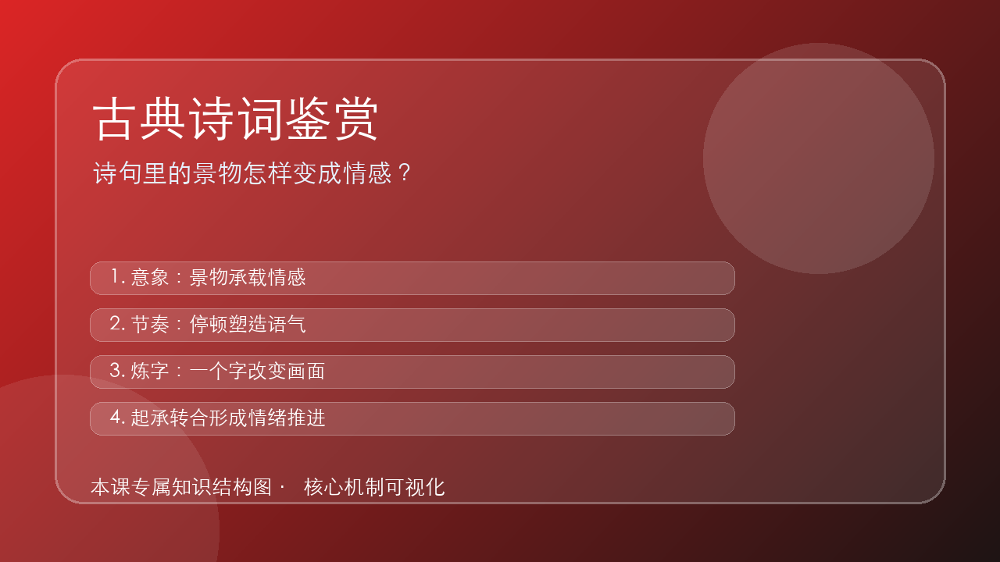

古典诗词教学课程
从诵读入门到诗体辨析，五章节建立完整的古典诗词阅读能力。
以诵读为主线，知识分散学习，每首诗都是一次新的相遇。

从诵读入门到诗体辨析，五章节建立完整的古典诗词阅读能力。
以诵读为主线，知识分散学习，每首诗都是一次新的相遇。
| 认知层级 | 能力描述（可观察任务） |
|---|---|
| 记忆 Remember | 说出绝句、律诗、古体诗、词的基本特征 |
| 理解 Understand | 解释平长仄短、两字一顿的诵读依据 |
| 应用 Apply | 按格律节奏正确诵读一首陌生的绝句 |
| 分析 Analyze | 找出一首诗的韵脚、平仄与对仗 |
| 评价 Evaluate | 比较同一意象在不同诗中的差异 |
| 创造 Create | 按起承转合框架完成一段诗歌鉴赏 |
古典诗词不是"阅读理解"——它有自己的语言系统：平仄、押韵、对仗、起承转合。教这些的最好方式，不是把它们系统地灌下去，而是把每个知识点分散在不同的诗里，一首诗承载一两个知识点，在反复诵读中自然习得。
本课程把系统知识拆成五章，每章锚定一个主线：诵读 / 平仄 / 押韵对仗 / 意象 / 诗体。学完之后，学生不是"背下了一堆术语"，而是真的能读懂一首陌生的古诗。
下列哪首作品是"律诗"？
朗诵"白日依山尽"时，哪种节奏更符合古诗诵读传统？
"大漠孤烟直，长河落日圆"中的"孤烟"主要营造了什么意境？
古诗的诵读停顿不按意思分，按声音分：
加上"平长仄短韵脚延"——平声字拖长、仄声字短促、韵脚字延长——你就还原了古诗本来的声音样貌。
把五言切成 2/2/1 三块："白日 / 依山 / 尽"。你读出的不是意思，而是节奏。
"白日依山尽"的意义是"太阳落在山后面"——按意思该 2-3 切。但声音节奏要求 2-2-1，两者不一致，这正是古诗的特色。
现代朗诵腔（Rap、播音腔、篱笆墙式"43 分段"）读不出古诗的味道。古诗的节奏是独立于现代汉语朗诵的另一套系统。
白日依山尽 / 黄河入海流（一口气读完，无停顿无拖腔）
或："白日 / 依山尽 / 黄河 / 入海流"（按意义节奏）
白日— / 依山— / 尽↗
黄河↘ / 入海— / 流↗↗
2-2-1 停顿 + 平声拖长 + 韵脚延长
| 方式 | 适用场景 | 注意事项 |
|---|---|---|
| 齐读 | 课堂开头的基本训练、气氛缓解、关键处高潮营造 | 不宜贯穿全课 |
| 示范读 | 核心环节，标注平仄与拖腔 | 教师范读或 TTS 领读 |
| 比赛读 | 激发诵读热情 | "敢不敢和老师比？" |
| 古版读 | 竖排无标点呈现，增趣又助记 | 有难度的诗适用，太简单的诗不宜用 |
| 吟唱 | 高级形式，诗歌情感的深度表达 | ⚠ 未入门不宜上台，"抹黑"胜于增辉 |
七言诗"两个黄鹂鸣翠柳"的声音节奏应该是？
下列诵读方式，哪一个不适合在课堂使用？
点击下面每个字切换它的平仄（1 平 / 2 仄），画布会实时绘制节奏曲线：平声上扬并延长，仄声短促下收。体会"平长仄短"的音高感。
汉语有四声。古汉语：平、上、去、入。其中平声为"平"，上、去、入为"仄"。
| 古汉语声调 | 现代普通话对应 | 平仄归属 |
|---|---|---|
| 平声 | 阴平（1 声）、阳平（2 声） | 平 |
| 上声 | 上声（3 声） | 仄 |
| 去声 | 去声（4 声） | 仄 |
| 入声 | （普通话已消失，分化入各声） | 仄 |
⚠ 入声字是难点——"绝、灭、雪、月"古为入声（仄），普通话却读成了平声。字典会标明入声，遇到时需特别记忆。
格律诗每句的平仄有严格规律，归纳为四种基本句式：
| 类型 | 五言 | 七言 |
|---|---|---|
| 仄起仄收 | 仄仄平平仄 | 平平仄仄平平仄 |
| 平起平收 | 平平仄仄平 | 仄仄平平仄仄平 |
| 平起仄收 | 平平平仄仄 | 仄仄平平平仄仄 |
| 仄起平收 | 仄仄仄平平 | 平平仄仄仄平平 |
"一三五不论，二四六分明"——第 2、4、6 位字平仄严格，第 1、3、5 位相对灵活。
"白日依山尽"——仄仄平平仄（白=仄入声，日=仄入声，依=平，山=平，尽=仄）。这是"仄起仄收"。
绝句 4 句、律诗 8 句、古体诗不限且不讲平仄。《静夜思》《登鹳雀楼》是格律绝句，《将进酒》是古体诗。
拿一首你熟的绝句，试试给每个字标平仄。你会发现大多符合四种句式之一。
点击下方卡片，翻转查看答案。
《静夜思》"床前明月光"的平仄模式是？
| 规则 | 说明 | 举例 |
|---|---|---|
| ① 位置 | 押在偶数句末字 | 二、四、六、八句尾 |
| ② 首句可押可不押 | 五言多不入韵，七言多入韵 | 《春望》首句押，《登高》首句押 |
| ③ 一韵到底 | 全篇同一个韵部，不可换韵 | 杜甫《登高》全押"灰"韵 |
| ④ 押平声韵 | 律诗、绝句原则上押平声 | 押仄声多见于古体诗 |
💡 判断口诀：偶句必押、首句看体、韵脚平声、一韵到底。
名词对名词，动词对动词，数词对数词……
例："两个黄鹂鸣翠柳，一行白鹭上青天"
两（数）对一（数）、黄鹂（名）对白鹭（名）、翠柳（名）对青天（名）。
上下联对应位置的字，平仄相反。
例："无边落木萧萧下，不尽长江滚滚来"
无（平）—不（仄）、落（仄）—长（平）、萧萧（平平）—滚滚（仄仄）。
📘 律诗规定：颔联（3、4 句）与颈联（5、6 句）必须对仗；绝句不强制。
赏析对象：王维《山居秋暝》颔联"明月松间照，清泉石上流"
下列哪一组是合格的对仗？
| 意象 | 典型含义 | 出处示例 |
|---|---|---|
| 月 | 思乡、团圆、孤独、时间流逝 | "举头望明月，低头思故乡" |
| 柳 | 离别、挽留（"柳"谐"留"） | "客舍青青柳色新" |
| 杜鹃/子规 | 哀思、亡国、思归 | "杨花落尽子规啼" |
| 梅 | 傲骨、高洁、不屈 | "俏也不争春，只把春来报" |
| 孤舟 / 扁舟 | 漂泊、孤独、隐逸 | "孤舟蓑笠翁" |
| 夕阳 / 落日 | 迟暮、乡愁、壮美 | "夕阳无限好，只是近黄昏" |
| 大雁 | 信使、思乡、秋意 | "雁字回时，月满西楼" |
⚠️ 意象具有多义性——同一个"月"，可以是思乡、可以是孤独、可以是永恒。需结合上下文判断。
不是"总—分—总"，而是古人写诗的标准思路。
交代场景、人物、时间。
例：春眠不觉晓
顺着起句铺陈描写。
例：处处闻啼鸟
视角、时空或情感的转变。
例：夜来风雨声
升华、点题或留白。
例：花落知多少
🎯 孟浩然《春晓》——起承转合的教科书。"夜来风雨声"是关键"转"，把春日闲适忽然拉到惜春伤春。
孟浩然《春晓》四幕情绪流转（Remotion 渲染 1920×1080 @30fps · 24 秒）。严格按"起(0-6s蓝夜)→承(6-12s晨鸟)→转(12-18s风雨)→合(18-24s落花)"推进，顶部"起承转合"四大字随幕次高亮。🔊 含四幕 TTS 诗句朗诵 + 四幕氛围配乐（起·古琴低音 / 承·竖笛鸟鸣 / 转·雨声雷声 / 合·余韵风声），建议佩戴耳机。
▲ 《春晓》起承转合四幕 · Remotion 程序化渲染教学动画
💡 起（0-6s） 蓝夜月明，万物未醒 → 承（6-12s） 朝阳初升，飞鸟掠空 → 转（6-12s） 电闪雷鸣，风雨骤降 → 合（18-24s） 残红满地，惜春伤春。情绪底色、意象粒子、诗句字幕、顶部标签、底部进度条——五轨数据驱动时间线，这正是 Remotion 的核心能力。
赏析对象：马致远《天净沙·秋思》
"月落乌啼霜满天，江枫渔火对愁眠"——"月"这一意象在此最贴近哪种含义？
| 诗体 | 句数 | 每句字数 | 格律要求 | 经典例 |
|---|---|---|---|---|
| 古体诗 | 不限 | 四/五/七言混合 | 不严格，可换韵 | 《春江花月夜》《茅屋为秋风所破歌》 |
| 五言绝句 | 4 句 | 5 字 | 讲究平仄、押韵 | 王之涣《登鹳雀楼》 |
| 七言绝句 | 4 句 | 7 字 | 讲究平仄、押韵 | 杜牧《山行》 |
| 五言律诗 | 8 句 | 5 字 | 平仄+押韵+颔颈对仗 | 王维《山居秋暝》 |
| 七言律诗 | 8 句 | 7 字 | 平仄+押韵+颔颈对仗 | 杜甫《登高》 |
| 词 | 依词牌定 | 长短句 | 依词牌"填" | 苏轼《水调歌头·明月几时有》 |
💡 词还要多看一步："词牌名"决定了字数、句数、押韵。《如梦令》≠《念奴娇》。
李白《静夜思》"床前明月光，疑是地上霜。举头望明月，低头思故乡。" 属于哪种诗体？
选择下列任一首诗，完成一份完整的赏析报告（300-500 字），要综合运用本课程五章所学。
按以下模板填空：
① 诗体：____（几句/几言/格律）
② 韵脚：____
③ 主要意象：____、____、____
④ 起承转合：起__、承__、转__、合__
⑤ 情感主旨：____
围绕三条线索自行展开：
· 诗体与格律特征
· 意象选择与意境营造
· 起承转合的情感脉络
自选一个主题切入（如意象并置、对仗之美、虚实关系），写一篇小论文式赏析，附上一首自己仿写的同韵同体四句诗。
| 维度 | 优秀（4） | 良好（3） | 合格（2） | 待提升（1） |
|---|---|---|---|---|
| 诗体辨识 | 正确判定并说明理由 | 判定正确 | 判定大致正确 | 判定错误 |
| 格律分析 | 准确标出平仄、韵脚、对仗 | 基本准确 | 部分准确 | 混乱或缺失 |
| 意象解读 | 结合文化传统与上下文 | 能解读主要意象 | 字面层面 | 未能识别 |
| 结构梳理 | 清晰梳理起承转合 | 大致梳理 | 顺序混乱 | 无结构意识 |
| 情感体悟 | 有个人共鸣与见解 | 把握主旨 | 停留表面 | 偏离文本 |
五言诗"国破山河在，城春草木深"的标准节奏应是？
普通话中，下列哪一组字全部是"仄声"？
下列哪项不是严格意义上的对仗？
柳永"杨柳岸晓风残月"中的"柳"主要寄托哪种情感？
杜甫《登高》"风急天高猿啸哀……百年多病独登台。艰难苦恨繁霜鬓，潦倒新停浊酒杯。"共八句七言，且颔颈对仗。它是——
古典诗词的学习不止于"考点"。当你能用节奏读出声韵之美、用格律看清文字秩序、用意象走进诗人内心、用诗体认清时代脉络——诗就不再是负担，而是一扇随身携带的美学之门。
愿你带着这把钥匙，继续在诗词世界里漫游。

And：你已经接触过「前置概念」。
But：遇到真实场景时，光背定义不够，容易把条件、证据和结论混淆。
Therefore：本课用「古典诗词教学课程」建立可解释、可迁移的思维模型。
朗读体验、语音辨析、迁移表达。学习时按「观察事实 → 建立模型 → 诊断错误 → 迁移应用」推进。
先听读和辨音，再用口型、字形、语境三条线索巩固。
1. 马上练：学习「古典诗词教学课程」前，最先要确认的是哪一类证据？
2. 练习题：如果同学解释不出来「为什么」，最可能缺少哪一步？
前置概念。先确认这些基础是否能说清楚，否则回到前测补洞。
chn-e-poetry-appreciation：古典诗词教学课程。抓住定义、条件、典型模型和反例。
把本课方法迁移到新材料、新数据或新情境中，形成可复用的解题/解释框架。
指出古典诗词教学课程在题干、图像、实验或文本中的可观察证据。
把概念拆成对象、条件、过程、结果四个部分，避免把概念当口号。
用一句因果链说明：因为哪些条件变化，所以出现怎样的结果。
和相邻知识点比较，找出相同点、差异点和容易混淆的边界。
设计一个新场景，验证你是否真的能使用这个概念，而不是只会复述。
易错点 1：把「条件」和「结论」混淆。诊断方式：遮住结论，只看证据是否足够推出它。
易错点 2：只记住关键词，忘记适用范围。诊断方式：换一个场景，检查规则是否仍然成立。
记忆锚点：先问「看见什么」，再问「为什么」，最后问「还能用到哪里」。这个口诀能把观察、解释、迁移连成闭环。
1. 练习题：面对一个新问题，最能体现你掌握了「古典诗词教学课程」的是：
选择一张课本插图、历史地图或自己的作业截图，先描述你观察到的证据，再向 AI 提问：它和「古典诗词教学课程」的哪个概念有关？
这段动画围绕「诗句里的景物怎样变成情感？」展开，依次说明核心机制、常见错误和迁移任务。